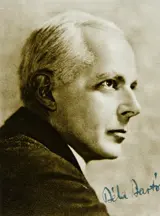

Concerto for Orchestra, Sz. 116
5 recordings · 37 min
In the Hall
- I. Introduzione — Andante non troppo; Allegro vivacePittsburgh Symphony Orchestra; Fritz Reiner, conductor · 19469:55
Fritz Reiner conducts the Pittsburgh Symphony in this 1946 recording of the first movement of the Concerto for Orchestra, Sz. 116, Introduzione — Andante non troppo; Allegro vivace. Cellos and basses climb through fourths, and later the brass play a fugue.
Listening notes · joins
- Opening, cellos and double basses
Cellos and double basses begin together, climbing in fourths. Muted violins enter above them, then a flute. The low phrase returns several times as more of the orchestra enters.
- Emigration to America, 1940
In October 1940 Bartók left Hungary for America. On the eve of leaving he wrote that the move was “like plunging into the unknown from what is known, but unbearable”. Columbia University gave him a modest research post in folk music for a number of months.
- Proposal for a commission, 1943
In early 1943, when Bartók was ill and short of money, two old friends, the violinist Joseph Szigeti and the conductor Fritz Reiner, suggested to Serge Koussevitzky that he commission an orchestral work from him in memory of his wife, Natalie.
- Koussevitzky’s commission, New York, 1943
In 1943 Serge Koussevitzky visited Bartók in a New York hospital with a commission worth $1,000. At first Bartók accepted only half the money, because he feared his health would prevent him from finishing the piece. The work is dedicated to Koussevitzky’s late wife, Natalie.
- Allegro vivace, first theme
Allegro vivace. The violins play a quick, twisting tune, and horns and bassoons reply beneath them. Oboes and clarinets add short, accented chords.
- Bartók’s note on the title, 1944
In his note for the Boston première in 1944, Bartók explained the title. The work treats single instruments or groups in a “concertant”, soloistic manner. His first example of this “virtuoso” treatment was the brass fugato in the development of this movement.
- Oboe melody, Tranquillo, bar 155
From bar 155 the oboe plays a new tune, marked dolce, over rocking figures in the violins and cellos. Muted horns hold the harmony. At bar 174 the clarinets take over the melody, and the harp plays between their phrases.
- Overlapping entries, bars 231–237
The violins play the quick figure again. The trumpets follow, then bassoons and clarinets, then oboes and flutes. Each group enters before the previous one has finished.
- First commercial recording, Pittsburgh, 1946
Reiner and the Pittsburgh Symphony made the first commercial recording of the Concerto on 4–5 February 1946, and it was issued in 1948. Reiner recorded the work again in Chicago for RCA on 22 October 1955.
- Tranquillo, clarinet and cor anglais
At the Tranquillo (bar 272) the clarinet plays over violins and violas while most of the orchestra rests. The cor anglais takes over the line at bar 287, with a flute above it. The bass clarinet enters at bar 300.
- Brass fugato
The trombones begin a fugato from bar 316, the same theme entering at different pitches before the earlier entries have finished. The trumpets then enter. Bartók marks the entries ben marcato.
- Recapitulation, second subject first
After the brass passage ends, the clarinet brings back the Tranquillo tune over strings and harp. Bartók reversed the earlier order, so the lyrical tune returns before the fast violin theme.
- Return of the first theme
The strings accelerate and bring back the first fast theme. Below them, the horns repeat their short figure.
Joins
- The violins take over
The introduction increases in speed over rising woodwind figures and a repeated phrase in the low strings. At bar 76, Allegro vivace, both violin sections take over the lead. Horns, bassoons and lower strings play accented notes in reply. Oboes and clarinets add short chords between the violin phrases.
- Oboe tune at Tranquillo
The tempo slows gradually to Tranquillo. The oboe begins a tune marked piano, dolce. First violins and cellos alternate between chords, two muted horns hold sustained notes above them, and the harp plays a short reply. The double basses rest.
- The quick figure moves upwards
At Tempo I (bars 231–237), unmuted violins bring back the quick figure above a timpani stroke. The trumpets then play it. Bassoons and clarinets enter together, followed by oboes and flutes, while horns, trombones and tuba hold a chord beneath the rising lines.
- Solo clarinet at Tranquillo
The orchestra broadens its last loud phrase, then stops. At Tranquillo, a solo clarinet plays the melody over first violins and violas, and the second violins join soon after. The cellos and double basses rest. The cor anglais later takes over the melody, with the flute above.
- Trombones enter one by one
The bass clarinet and strings slow down at the end of the quiet passage. At Tempo I the quick figure returns in the bassoons and low strings. The trombones then begin their overlapping entries, marked ben marcato. The trumpets join above them as the strings stop.
- Brass stop; clarinet enters at Tranquillo
The full orchestra broadens its repeated chords before Tranquillo. Strings and harp take over from the brass. Two horns put on mutes, and the clarinet enters with the lyrical tune, marked espressivo, above pizzicato double basses (bars 391–402).
- The strings accelerate into the return
The wind figures thin out over repeated low-string notes. At the accelerando the violins remove their mutes and climb. The horns repeat a short figure with the cellos and basses, and the quick violin theme returns as the tempo increases.
- II. Giuoco delle coppie — Allegretto scherzandoPittsburgh Symphony Orchestra; Fritz Reiner, conductor · 19465:50
In Giuoco delle coppie (Allegretto scherzando), the second movement of Bartók’s Concerto for Orchestra, Sz. 116, the wind instruments play in pairs, each pair at its own fixed interval. A brass chorale interrupts the sequence of pairs, and when the bassoons return, a third player joins them.
Listening notes · joins
- Opening, side drum and bassoons
The side drum begins alone, with its snares switched off. After seven bars of taps the first pair enters, two bassoons moving together a sixth apart over plucked strings.
- Oboe duet in thirds
The two oboes play in thirds over the strings (bars 25–44). Their tune has quick turns and short rests. The bassoons, which played the preceding duet in wider intervals, now rest.
- Bassoon duet and the kolo
According to Bartók’s editor Benjamin Suchoff, the opening bassoon duet, a major sixth apart, imitates a Yugoslav kolo, a round dance. In America Bartók had spent months at Columbia University working on South Slavic folk music.
- Programme note, Boston, 1944
For the Boston première in 1944, Bartók described the concerto as moving from sternness to a “life-assertion” in the finale. He made one exception, the “jesting second movement”.
- Brass chorale, bar 123
From bar 123 the trumpets play senza sordino in a five-part brass chorale. The note values are longer, and Bartók marks the passage lo stesso tempo. The side drum continues its pattern under the chords.
- Bassoon pair returns with third bassoon
The original bassoon pair returns, still a sixth apart. A third bassoon plays beneath them in quicker notes, marked staccato. The plucked string accompaniment also returns.
- Fritz Reiner and Bartók
Fritz Reiner studied in Budapest, where Bartók was among his teachers. His biographer Philip Hart wrote that Reiner had “an understanding and devotion of Bartók’s music that no other conductor of his time equaled”.
- Coda, side drum alone
The strings stop and the winds hold a last chord. The side drum, still without snares, ends the movement alone with the same dry taps that opened it.
Joins
- The bassoon duet begins
After seven bars of side drum, the two bassoons begin their duet in sixths. Second violins, violas, cellos and double basses play a pizzicato accompaniment. The drum thins to isolated strokes and stops. The bassoons continue at the same Allegretto scherzando tempo.
- Trumpet duet to brass chorale
The trumpet duet and the strings hold notes while the drum goes back to its opening rhythm. At lo stesso tempo (bar 123), two unmuted trumpets and two trombones begin the chorale, with the tuba below. The beat does not change under the longer note values.
- Bassoon duet returns with third bassoon
Over the last held chord in horns and tuba, flute, oboe and clarinet play short figures. The two bassoons then play their opening tune again over pizzicato strings. In this return a third bassoon plays a line below the duet, marked staccato.
- Wind chord continues after the strings
The strings stop after their last held chord. Flutes, oboes, clarinets and bassoons repeat a chord, then sustain it over the horns. The side drum returns underneath, without snares. When the winds stop, the drum’s taps fall to pianissimo.
- III. Elegia — Andante non troppoPittsburgh Symphony Orchestra; Fritz Reiner, conductor · 19467:50
The Elegia, marked Andante non troppo, is the central slow movement of the Concerto for Orchestra, Sz. 116. It begins with a low line in the strings while flute and clarinet play runs above it, and after the loud climaxes the movement closes with the piccolo.
Listening notes · joins
- Opening, double basses
The double basses begin, with timpani beside them. Cellos, violas and second violins enter in turn. The phrase repeats the slow ascent from the bottom of the orchestra that opens the first movement.
- Eleven-note groups, flute and clarinet
In bars 10–17 the flute and clarinet play rising and falling groups of eleven notes. The harp adds glissandos, and the oboe holds a long sustained line. The strings sustain beneath them.
- Bartók’s note for the Boston première, 1944
In his note for the Boston première Bartók called this movement a “lugubrious death-song”. He described the concerto as moving from the sternness of the first movement and this death-song to the life-assertion of the last.
- Saranac Lake, 1943
In 1943 Bartók worked on the concerto at Saranac Lake in upstate New York while recovering from illness. Koussevitzky’s commission had reached him in hospital. By autumn the five movements were finished.
- Solo cellos, pizzicato
A sharp horn chord gives way to a long, quiet note. Below wavering oboes and clarinets, two solo cellos play quick pizzicato figures. The violins and violas play close to the bridge, and the tam-tam sounds softly behind them.
- Viola melody, bar 62
From bar 62 the violas play a legato line marked molto espressivo, legato. Bartók also writes molto rubato, so the phrase may move freely against the beat. Muted violins and two harps play shorter figures.
- Bartók’s complaint, end of 1942
At the end of 1942 Bartók complained: “The quasi boycott of my works by the leading orchestras continues; no performances either of old works or new ones.” Within months Koussevitzky’s commission reached him in hospital.
- High chords over moving lower parts
Flutes and violins play repeated high chords. Below them, the clarinets, bassoons, violas and cellos move in continuous lines.
- Return of the opening phrase
At bar 99 (Tempo I) the opening phrase returns in basses, cellos and violas. The flute and clarinet runs return above it. The muted horn holds a single note beneath them.
- Reiner in Pittsburgh, 1946
Fritz Reiner conducted the Concerto in Pittsburgh on 18 and 20 January 1946 and recorded it on 4–5 February. Bartók had died on 26 September 1945.
- Closing bars, piccolo and timpani
The piccolo plays short calls above a muted horn and the last notes of the strings. When the strings stop, piccolo and timpani play the ending pianissimo.
Joins
- Wind runs pass to the strings
The flute and clarinet runs spread into several parts. A muted horn holds its note over cellos and violas, and the violas bow close to the bridge. Divided violins take up the winding figures. Piccolo calls and short brass phrases lead to the first full lament.
- Horn chord over plucked cellos
At bar 54 the horns strike a chord and immediately drop to piano. Oboes and clarinets alternate between neighbouring notes. Below them, solo cellos pluck rapid figures; the double basses are silent. The upper strings bow near the bridge, and the tam-tam plays soft strokes behind the held horn chord.
- Viola entry at Poco agitato
The wind oscillations broaden and stop. A few pizzicato notes in the cellos and basses lead to the viola entry, marked molto espressivo, legato. Bartók marks the new Poco agitato phrase molto rubato. Muted violins and the two harps follow the violas.
- High chords over the rising line
At Tempo I, cor anglais and clarinets begin a rising line, and the bassoons join them. From bar 86, high chords in the flutes and violins cut across this line. Violas and cellos carry on with the lower melody while the upper parts repeat their accented chords.
- The low-string phrase returns
The outburst dies down to flute and clarinet runs over a violin note that fades. Low strings play the opening phrase again, marked piano. At Tempo I the woodwind runs resume above held strings and a muted horn, with quiet timpani underneath.
- IV. Intermezzo interrotto — AllegrettoPittsburgh Symphony Orchestra; Fritz Reiner, conductor · 19464:29
The fourth movement, Intermezzo interrotto (Allegretto), of the Concerto for Orchestra, Sz. 116. An oboe tune and a broad viola melody are interrupted by a clarinet playing a march from Shostakovich’s Seventh Symphony, and the trombones follow with a pair of slides.
Listening notes · joins
- Oboe theme in changing metres
After a short string introduction, the oboe plays a tune in bars of changing length. Violas and cellos accompany it pizzicato.
- Viola melody, <i>Calmo</i>
At Calmo the violas play a broad cantabile melody over chords from two harps. The violins then take up the melody, and the cor anglais joins them.
- Shostakovich quotation, clarinet
In bars 75–92 the clarinet plays the march tune from Shostakovich’s Seventh Symphony. The strings accelerate and the brass enters. The trombones then play upward glissandi.
- Shostakovich and Lehár parody
Bartók’s march parodies the “invasion” theme of Shostakovich’s Seventh Symphony, which itself refers to “Da geh’ ich zu Maxim” from Lehár’s operetta The Merry Widow. Writers have long disagreed over whether the target is Shostakovich, Lehár or both.
- Return of the broad theme
The broad theme returns in muted violins and violas, over harp chords and pizzicato lower strings. Bartók marks it non crescendo as the line rises.
- Ballet contract, January 1944
In January 1944 Bartók signed a contract with American Ballet Theatre for a ballet version of the concerto. He prepared a piano score, and the conductor Antal Doráti helped with the negotiations. The ballet was never staged.
- Flute cadenza
The flute plays a short cadenza and the beat slackens. Horns and strings hold their notes underneath while the flute turns back on itself, pauses and continues. The final exchanges are short and quiet.
Joins
- Violas take the longer phrase
The flute and oboe finish their short phrases. At Calmo the violas begin a melody marked cantabile, and two harps play chords beneath it. The cellos and double basses rest for the opening bars of the melody, and the timpani play the bass line.
- The oboe tune returns at Tempo I
The harp chords stop at the end of the broad song. At Tempo I, the oboe takes up the opening tune again, and flute and clarinet reply to it. Violins and violas hold chords, and cellos and double basses play the accompaniment pizzicato.
- The clarinet introduces the march
Repeated string figures begin beneath a held horn note, and the cellos and basses play their accompaniment pizzicato. The clarinet introduces the march. An accelerando leads into Più mosso, where chords from muted trumpet and trombone cut across the march. Two upward trombone slides follow.
- Return of the Calmo theme, muted
The wind figures die away and the tuba holds its last note. The Calmo theme returns in muted violins and violas, in bars 119–127 of the printed score. Harp chords and pizzicato second violins, cellos and double basses accompany it. Bartók marks the rising phrase non crescendo.
- Woodwind passage before <i>Tempo I</i>
The oboe begins its old tune over the last harp and string chord. The accompaniment drops out. Flute, oboe and clarinet exchange short phrases without the other instruments, and the strings rejoin them at Tempo I.
- Flute quasi cadenza before the a tempo
The phrase slows and stops on a fermata. The flute then plays a quasi Cadenza over held horn and string chords, and the double basses rest. The flute figure is marked rubato and più volte ad libitum, so the flautist may repeat a small turn freely. A descending run follows, and the music returns a tempo.
- V. Finale — Pesante; PrestoPittsburgh Symphony Orchestra; Fritz Reiner, conductor · 19469:03
The fifth movement of Bartók’s Concerto for Orchestra, Sz. 116, opens with a horn call, after which the strings play strummed chords and the Presto begins. The full orchestra takes up the themes, and the movement ends in F major.
Listening notes · joins
- Opening horn call and Presto
The horns play the opening call, marked Pesante, heavily. After a long pause, violas and cellos put their bows aside and strum chords like guitars. At bar 8 the second violins begin the Presto, playing at the tips of their bows.
- Letter to Péter Bartók, 1943
On 26 September 1943 Bartók wrote to his son Péter: “The first 4 are already finished. Now I am having trouble with the last, which for certain reasons is the most difficult.” He was working on the concerto for most of each day.
- Bassoon theme, bar 148
The running figures stop, and a solo bassoon plays a new theme from bar 148, marked ben marcato. A second bassoon enters at bar 152 and the clarinets at bar 155, over muted strings.
- First performance, Boston, 1944
Koussevitzky conducted the première with the Boston Symphony on 1 December 1944. Bartók told a pupil that Koussevitzky called it “the best orchestra piece of the last 25 years”, including the works of his idol Shostakovich.
- Un poco meno mosso, harps and violins
The tempo slows to Un poco meno mosso (bars 256–299). Two harps play chords above divided violins, and short woodwind phrases pass between the string lines. Some violinists bow the tune while others play the accompaniment pizzicato.
- Reiner’s score, corrected by Bartók
Reiner conducted from a score that Bartók himself had corrected. Paper strips with the revised passages are pasted over the old ones, and the new ending is inserted after the last page. The score is now in the Fritz Reiner Score Collection at Northwestern University.
- Horn phrase over string figuration
The horns play a long phrase over the violins’ quick notes, and the cellos and double basses repeat a short figure below. Trumpets and trombones enter with accented chords. The fast line then returns in the strings.
- Tranquillo, bars 449–475
Tranquillo. The first violins play a soft melody marked dolce over muted chords in the other strings. Flutes, oboes, clarinets and horns enter in longer notes. Bartók adds the marking sempre più tranquillo.
- Wind and brass over running strings
The strings continue their running scales while winds and brass play longer phrases above them. Muted trombone and tuba add a low line; later the horns and trumpets enter. The double basses hold sustained notes beneath.
- Original and alternative endings
Koussevitzky’s radio broadcast of 30 December 1944 used Bartók’s original ending. Reiner’s Pittsburgh recording, made in February 1946, used the longer alternative ending that Bartók supplied.
- Alternative ending, bars 602–625
Reiner plays Bartók’s expanded ending. The tempo increases again and the tune passes between strings and winds, with upward glissandos in the horns and trombones. Side drum and cymbal reinforce the final acceleration into F major.
Joins
- Horn call to strummed Presto
The horn call ends on a long pause. Violas and cellos put their bows aside and strum repeated chords, marked quasi chitarra. The tempo accelerates into Presto. The second violins run above the strummed chords, with muted horns, timpani and plucked bass notes underneath.
- Bassoons enter as the woodwinds stop
The woodwinds stop their running figures one group at a time. Violins, violas and cellos carry on briefly, then drop to piano. A bassoon enters with a pointed tune marked ben marcato, and a second bassoon joins above it. Muted strings play short notes beneath them.
- Harps introduce the quiet string entries
Un poco meno mosso opens with quiet harp chords and a held note in the second violins. The first violins then enter, divided. The low strings rest. Pizzicato notes within the violin sections provide the accompaniment, and the flute, clarinet and bassoon play short phrases above it.
- Long horn phrase over running violins
The first violins continue their running figure while unmuted horns play a longer phrase above. Cellos and double basses repeat a three-note figure below. Wind chords and brass accents join the crescendo. After a sharp chord, the quick figure starts again in the bassoons and low strings.
- Tranquillo with muted inner strings
The tempo slows to Tranquillo. First violins play the melody piano, dolce, accompanied by muted second violins and violas, with cellos and basses playing quietly below. Woodwinds follow with long phrases. Horns hold their notes across the change and later put on mutes.
- Low brass beneath the string scales
Violin, viola and cello scales continue over held notes in the double basses. Clarinets sustain above them, and muted trombone and tuba enter. The tune passes through the cor anglais and other winds. Horns and unmuted trumpets join as the strings climb.
- The revised ending in F major
The revised ending adds another acceleration. Short wind and string phrases pass over held notes in the horns and trumpets. The double basses rest until the last page, then rejoin for the final upward run. Horns and trombones play glissandos and the side drum has a roll. The movement ends on a chord of F major.